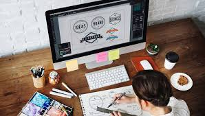
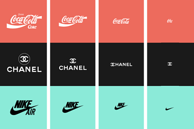

Diseño editorial
Este es el primer camino y más conocida especialidad. De hecho, es mi propia especialidad o al menos, en la que me siento más cómoda. Este campo requiere tener buenas habilidades de diagramación o maquetación o lo que yo llamo jugar al tetris ;), además de ser un maestro de InDesign. En ella entran todas las publicaciones impresas como las revistas, libros, folletos, trípticos, flyres, periódicos, catálogos, cómics, tarjetas postales, portadas, agendas, invitaciones, directorios, menús, cartas, stands… y un sin fin más de publicaciones. Además, hoy en día, no sólo abarca el medio impreso, las tabletas y los smatphones abren un nuevo campo de fusión de diseño impreso y tecnología digital. Si te encanta trabajar con InDesign y si la industria del libro lleva el mismo camino, las publicaciones digitales puede ser un gran futuro para trabajar en el diseño editorial. En esta especialización hay que tener conocimientos de tipografía, color, jerarquización, composición, compaginación, originalidad… y un talento esencial con una mente ágil a la hora de estructurar y organizar los montones de texto e información en una sola página de forma clara y atractiva. Utiliza los códigos de puntos, líneas, formatos, formas, tipos, texturas, color, imágenes, ilustración, retículas y como no, texto.
Diseño publicitario
 Este campo requiere tener una mente comercial y estratégica en el uso de la creatividad, la legibilidad, la motivación y la persuasión. Todo ello para conseguir la venta. Se enfoca a la creación de carteles, folletos, flyers, anuncios impresos y audiovisuales, stands… Está apoyada por el marketing y su objetivo principal es convencer, producir emociones y con ello, conseguir una acción específica. utilizan Slogans, imágenes, textos, marcas, colores, redes, texturas, estructuras… Funcion y efectos sociales Su principal función es presentar un producto de manera atractiva para que este sea aceptado por muchos consumidores y conseguir el efecto social del consumo. suelen trabajar en Agencias de publicidad, agencias audiovisuales, estudios de diseño y freelance. programas Indesign, illustrator, photoshop, after effects, premier…